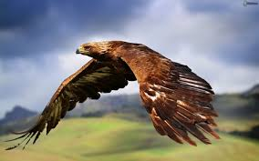
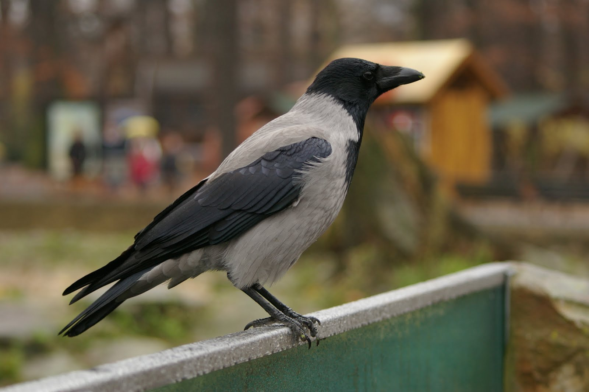
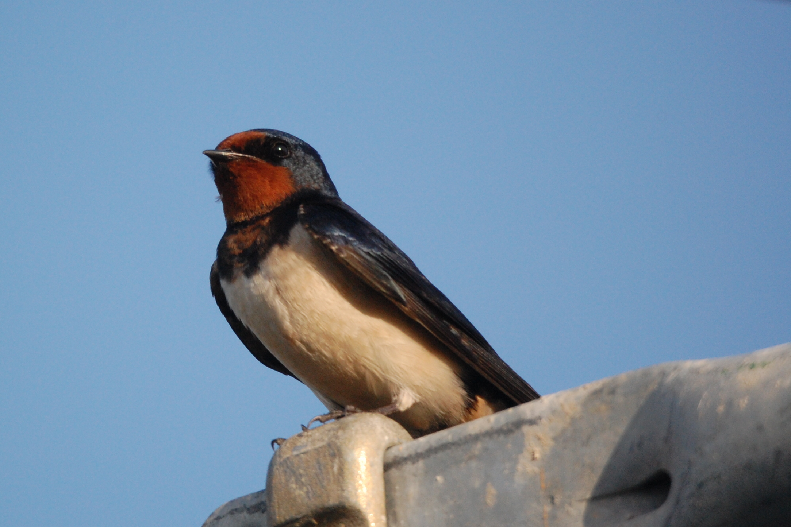

Eagles are large, powerfully built birds of prey, with heavy heads and beaks. Even the smallest eagles, such as the booted eagle (Aquila pennata), which is comparable in size to a common buzzard (Buteo buteo) or red-tailed hawk (B. jamaicensis), have relatively longer and more evenly broad wings, and more direct, faster flight despite the reduced size of aerodynamic feathers. Most eagles are larger than any other raptors apart from some vultures.

The carrion crow was one of the many species originally described by Linnaeus in his 18th century work Systema Naturae and it still bears its original name of Corvus corone. The hooded crow, formerly regarded as a subspecies, has been split off as a separate species, and there is some discussion whether the Eastern carrion crow (C. c. orientalis) is distinct enough to warrant specific status; the two taxa are well separated, and it has been proposed they could have evolved independently in the wetter, maritime regions at the opposite ends of the Eurasian landmass.

The swallows and martins are a group of passerine birds in the family Hirundinidae that are characterised by their adaptation to aerial feeding. Swallow is used colloquially in Europe as a synonym for the barn swallow. This family comprises two subfamilies: Pseudochelidoninae (the river martins of the genus Pseudochelidon) and Hirundininae (all other swallows and martins). Within the Old World, the name "martin" tends to be used for the squarer-tailed species, and the name "swallow" for the more fork-tailed species; however, there is no scientific distinction between these two groups.[1] Within the New World, "martin" is reserved for members of the genus Progne. (These two systems are responsible for the sand martin being called "bank swallow" in the New World.) The entire family contains around 83 species in 19 genera.